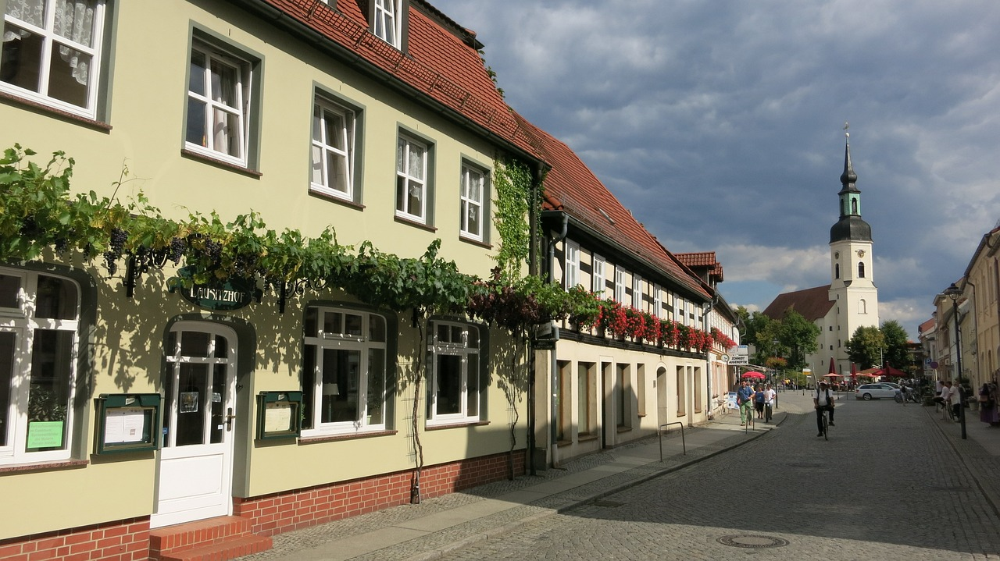

Die Stadt Lübbenau/Spreewald liegt etwa 95 Kilometer südlich von Berlin am Rand des Oberspreewaldes. Das Bild der Stadt und ihrer Ortsteile hat sich zu einem bedeutenden Erholungsziel in Brandenburg entwickelt. Die historische Altstadt mit dem Lübbenauer Schloss zieht zahlreiche Besucher aus der Region und darüber hinaus an.
Stadt- und Ortsteile
Stadtportait

Ortsteile
Im Zuge der Gemeindegebietsreform in Brandenburg 2003 wurden die früheren Gemeinden Bischdorf, Groß Beuchow mit Klein Beuchow, Boblitz, Hindenberg, Kittlitz mit Eisdorf, Lichtenau und Schönfeld, Groß Klessow mit Klein Klessow, Leipe, Groß Lübbenau, Klein Radden mit Groß Radden sowie Ragow als neue Ortsteile in die Stadt Lübbenau/Spreewald integriert. Bereits in den 1970er Jahren wurden die Ortsteile Krimnitz, Lehde und Zerkwitz eingemeindet. Trotz dieser Eingliederung haben die Dörfer ihren ursprünglichen Charakter bewahren können: Die Eigenheiten, Geschichten, die dörfliche Gemeinschaft und die Traditionen der Feste sind in ihrer ganzen Vielfalt erhalten geblieben.